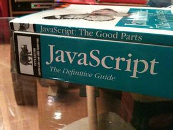

- 《计算机科学导论》
- 第2版
- [著]Behrouz Forouzan
- [著]Firouz Mosharraf
- [译]刘艺 等
- 机械工业出版社
- JD Link
- 推荐指数：
- 《Head First HTML与CSS》
- 第2版
- [著]Elisabeth Robson
- [著]Eric Freeman
- [译]徐阳 等
- 中国电力出版社
- JD Link
- 推荐指数：
关于这本书：
这本书我给三星，如果我是一个外国小孩，可能会给四星吧。"Head First"系列是经典入门书籍，紫色的封面，并不好看的头像，奇葩的正方形，和别的书在一起，怎么放都不和谐。
之前看过《Head First Java》,那是我买过的为数不多的没看下去的书，这次鼓起勇气选了这本《Head First HTML与CSS》,读下来之后发现感觉好多了。
虽然这本书只给了三星，但是回想起来，真的是这本书领我入门的，作为一本入门书籍，这本是完全是合格的，甚至是优秀的。700多页，通俗易懂，很快就可以读完。
我不喜欢的只是它的风格，大家都是成年人，真的没有必要那么Q，如果能精简一下，那将会降低一下入门成本。
不过这就是Head First系列的风格，我们无权干涉，也许它们的目标读者根本不是我们。总而言之这是还不错的一本前端入门书籍，至少当时我没有找到更好的。
- 《JavaScript DOM编程艺术》
- 第2版
- [著]Jeremy Keith
- [著]Jeffrey Sambells
- [译]杨涛 等
- 人民邮电出版社
- JD Link
- 推荐指数：
关于这本书：
广受好评的javascript入门书籍，书的名字很奇怪，但是当这么一个奇怪的名字反复被提及的时候，直觉告诉我这本书应该不错。
实际读下来发现没有错，作为一本入门书籍，不会去反复阅读，因为一直在啃下边的《JavaScript高级程序设计》，这本只读了一遍，但是现在觉得真的有必要再读一遍这本书。
全书整体并没有概括出一个清晰的js语言以及DOM的一个清晰的体系结构，甚至从目录章节标题中，不能得知这节究竟讲了一些什么内容。所以这不是一本用来查阅的书，从头阅读到尾，是这本书正确的阅读方式。
书的整体节奏感很强，从js的历史讲起，毫不夸张地讲，初学前端真的要学很久“历史”，当时我在想，我看了好几天书觉得学了好多东西，但是怎么都是历史，现在看来，了解这些历史对于理解整个前端绝对是必要的。
书的内容整体张弛有度，尤其体现在承上启下的第五章《最佳实践》，在之前章节学了一堆历史、概念、语法和例子之后，一个提神的章节，为我们讲了一些经验性、结论性的东西，它并不是对前文的总结，但是放在这里恰到好处。
一个图片库的例子，贯穿本书始终，可以无痛读完。其实也说不清这本书为什么好，也许这正是这本书的高明之处。通过合理的结构、通俗易懂且有趣的语言、清晰的逻辑关系，给读者一种流畅的感觉。
如果这个系列再有一本讲HTML和CSS基础的书，那我就把《Head First HTML与CSS》扔了。: )
- 《精通CSS:高级Web标准解决方案》
- 第2版
- [著]Andy Budd
- [著]Simon Collison
- [著]Cameron Moll
- [译]陈剑欧
- 人民邮电出版社
- JD Link
- 推荐指数：
关于这本书：
这本书没有读完，只是挑选了自己关心的一部分重点章节，不便于不负责任地给五星。
因为选这本书的目的，只是想找到比较权威的、CSS核心概念相关的内容，如选择器、盒模型、定位、布局、浮动和一些关于CSS不可不知的内容。
谁也不想在职业生涯初期，就被自己在网上搜的一篇博客，迷惑甚至误导好几年，所以这样一本权威甚至必读的CSS书籍是必要的。
我所关心的问题，这本书都比较好地给出了答案。这是一本关于CSS的相对进阶的书，但还不至于“高级”。
在有了一些CSS基础，并且还有点小迷惑的时候，阅读这本书的某些地方，会有连连点头的感觉。关于这本书，只读了一半，不说过多。
- 《锋利的jQuery》
- 第2版
- [著]单东林
- [著]张晓菲
- [著]魏然
- 人民邮电出版社
- JD Link
- 推荐指数：
关于这本书：
选择一本技术类书籍，是一件很严肃的事情，选不好我觉得很可能会影响整个职业生涯。坦率地讲，在我挑选书籍的时候，小心翼翼，尽量挑选外国人写的书，我知道这样也许不合适，但真的没办法。
关于jQuery，几乎应该算是前端必备的技能了，由于这本书具有压倒性的效率和推荐率，所以最终选择了这本国人主笔的书籍。
如果说看老外的书是听方言的话，那这本读起来的感觉就好像回到了家，或者在大学里，大家都讲普通话。
书中不讲情怀，不耍大牌，开门见山，直截了当，就是好用。另外结构清晰，看目录定位内容，就像手册一样。正着读、跳着读都可以。
如果想以看书的形式学习jQuery，这本应该是没什么问题的，其实也没什么别的选择......好在这本还不错。

- 《JavaScript高级程序设计》
- 第3版
- [著]Nicholas C.Zakas
- [译]李松峰 等
- 人民邮电出版社
- JD Link
- 推荐指数：
关于这本书：
终于，到了这本书，它有着太多的光环，就不用夸了。既然有着这么多的光环，自然也不能轻易说它的不好。那就说说怎么读的吧。
任何人遇到这种3cm+厚、字不大、图不多的技术书籍的时候，心里应该都是不好接受的，字典式工具书除外。之前的书，从头翻到尾，看不懂再翻一遍就行了，而这次我真的要认真考虑下阅读方式与技巧。
经验告诉我，一定要要分清主次，目前这个阶段，我需要的一定不是一整本书的内容，而是其中的一部分。
于是我结合自己的判断和别人的建议，初步挑选了我首先要读的章节，前七章，无论是用左眼还是右眼看，都觉得很重要，另外BOM、DOM、事件、表单、JSON、Ajax，无论如何都要看的。Canvas这类技术上还不明朗、前途未卜的东西，暂且先放一放。
真正读起来这本书，才体会到这本书对得起这霸道的名字，尤其是高潮迭起的第6章《面向对象的程序设计》。
每读一个章节，都在感觉自己在变强。但是很明显，这本书是读起来不会是一帆风顺的，遇到不懂的地方，耐心多读几遍，实在不懂，也不像以前那样去勉强，20多岁的时光，毕竟宝贵。
读了这本书，明显感觉自己是提升了一个层次的，但也深刻认识到，js是一个无底洞一样的东西，知道的越多，就越觉得自己一无所知。
截至目前，这本书少数章节甚至一点也没看，而有的章节读了至少5遍，我觉得这样没有什么不妥，不打算做书的奴隶，而做书的主人。这本书还会在相当长的一段时间内，一遍一遍地看下去......
另外，叫《高级程序设计》这个名字，注定了这是一本大而全风格的书，但是，我对书的观点，就像对网页设计一样，推崇优雅简洁，任何这种字典形状的书，作为一个读者，我认为都是有精简的空间的。
如果说像中国大学教材一样，把书写的尽量厚，能多赚点钱的话，那简直堪称遗憾，我也无话可说。但人生苦短，大家又都很忙，无论出于任何目的，真的有必要把书写那么厚吗？！勇敢地只给四星。
- 《JavaScript语言精粹》
- 修订版
- [著]Douglas Crockford
- [译]赵泽欣
- 电子工业出版社
- JD Link
- 推荐指数：
关于这本书：
选择这本书，有几个原因：一是大家的推荐，作为《JavaScript高级程序设计》的下一本。二是我对薄薄的书的偏爱。三是网上那张看一次笑一次的图：
书名是The Good Parts,但是用了很大的篇幅讲了javascript这门语言的毒瘤与糟粕。
这本书很多地方都在斩钉截铁地下结论，摆事实，语气坚定。更令人感觉到与众不同的是，这本书很多时候都在说“xxx应该避免使用”、“xxx是魔鬼”、“最好的办法就是永远不去使用xxx”。原来大师级别的人，写书的语气竟然可以是这样的。
而我也突然意识到，原来之前我们努力学的很多东西，其实都是废物，就像中国古人说的“尽信书，则不如无书”。同时，这本书既然提醒到了我这一点，那么我也很自然地对本书的观点保留一定的怀疑态度，而网上对道格拉斯先生的一些观点，也有着不少反对的声音。
这本书提醒我们要用怀疑一切的眼光看待一本书和一门技术，同时也在用我喜欢的方式讲该讲的内容。另外，这本书的附录部分，是非常值得阅读的。
- 《用AngularJS开发下一代Web应用》
- [著]Brad Green
- [著]Sbyam Sesbadri
- [译]大漠穷秋
- 电子工业出版社
- JD Link
- 推荐指数：
关于这本书：
AngularJS的书籍，选择实在是太少了，可能对于这种框架来说，通过阅读书籍，并不是最佳的方式。
而且，2013年出版的书，对于变化如此之快的环境来说，有些过时是在所难免的。
然而，对于喜欢通过读书来学习的人来说，这本书还是能提供有效地帮助的。
一些AngularJS的核心概念和原理，如MVC、双向数据绑定、依赖注入、模块化、指令系统、路由等，这本书还是给了很好的解释。
对于AngularJS，可能还没有一本必读的权威书籍，这本虽然应该很接近，但是明显还不是。
AngularJS无论如何都是一个不能忽视的前端框架，而AngularJS 2正在赶来，据说变化还是很大的，并不向下兼容，可能那才是属于我们这一届前端小学弟的东西。
- 《图解HTTP》
- [著]上野 宣
- [译]于均良
- 人民邮电出版社
- JD Link
- 推荐指数：
关于这本书：
这本书只读了重要的前5章，并且看了这本书之后，我决定以后尽量不去买这种类似《Head First》风格的书。
总体感觉，这种书有点高不成低不就的感觉。还是不去怪书了，毕竟都没有读完。
- 《深入浅出Node.js》
- [著]朴灵
- 人民邮电出版社
- JD Link
关于这本书：
还没有读，但先买了，因为早晚会读。看了目录和前言，一个个吸引人的key words,总让人有放下手头的事，先把这本读了的冲动。
不过2013年12月出版的书，在前端这行，还是感觉稍微有些老了，期待第二版。
另外，关于Node.js的版本号，因为和io.js闹分手，又破镜重圆什么的，从V0.12.7直接跳到V4.0.0,这真是一个有故事的东西......
Update:
国庆期间花了大概两天把这本的大部分章节读了一读，收获很大，倒不只是对Node本身，而是对整个Web开发的方方面面有了更深的理解。这本书很多时候都是以一个前端的视角来编写的，虽然Node主要运行在服务器端，但是这本书对一个前端工程师来说，是十分友好的。
原本以为，作为一名前端，Node相关的东西只是作为补充，但是现在回过头来，觉得这甚至是必须要了解的内容。主要是因为，越来越多的前端工具，是基于Node的，并在npm上管理使用。
这本书第二章对于模块机制的介绍，对前端来说有很大帮助。另外，后端知识本身，对于前端工程师理解前后端交互很有好处。
关于这本书：
我考虑过一上来就给满分五星，是否真的合适。但翻看目录，回想这本书的内容，觉得这本书给五星评价真的是实至名归。
当我们进入一个未知的领域、一定迫切希望得到这个领域的一个高度概括的知识体系，同时希望这个体系是相对权威的、至少是不会误导人的。
每一种技术，如果深入研究，那一定都是无止境的，但是当人们提及计算机领域的一个方面，最重要的往往都是一些最基本的概念、原理、方法等，初期我们并不关心技术细节。
这是一本带有科普性质的专业书籍，涵盖了计算机技术的各个方面，书不厚，共18章，每章篇幅并不多，所以每章讲的一定是这个领域最核心的内容。
Web前端作为一个比较新的一种职业，在这本书里是没有提及的，但是我们都清楚，Web前端的知识体系是非常庞大的，涉及书中计算机网络、算法、程序设计语言、软件工程、数据结构等章节。
我认为，包括前端在内，每一个计算机科学领域的人，如果读了这本书都会十分有益。不需要通读，只关心自己感兴趣的章节就好。
我在想如果大一的时候就遇到这本书将会是怎样......